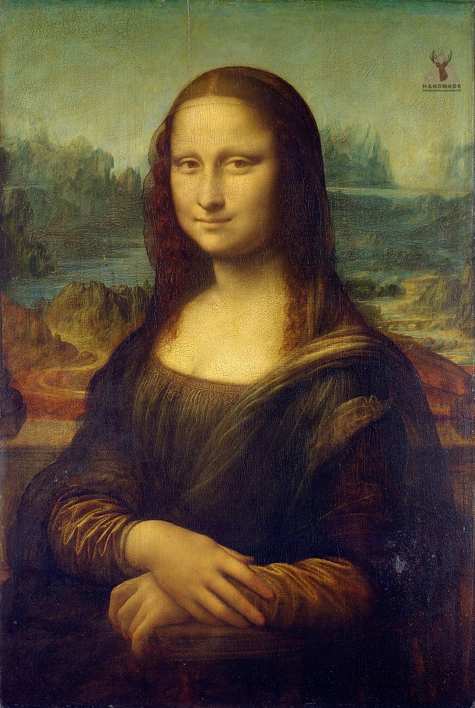
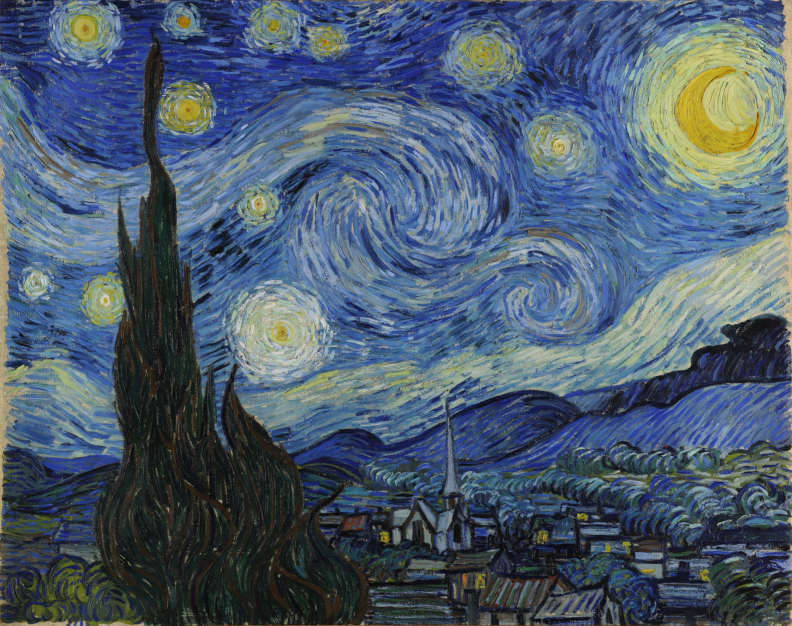
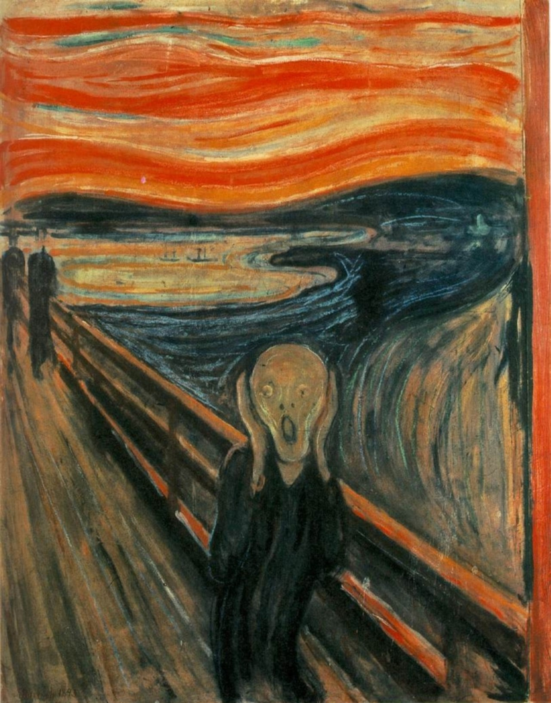

Мона Ліза
Леонардо да Вінчі, 1503-1519
Одна з найвідоміших картин у світі, що зберігається в Луврі. Загадкова посмішка Джоконди вже протягом століть привертає увагу глядачів та дослідників.

Зоряна ніч
Вінсент ван Гог, 1889
Знаменита картина, створена під час перебування художника в притулку Сен-Полі-де-Мозол. Зараз знаходиться в Музеї сучасного мистецтва в Нью-Йорку.

Крик
Едвард Мунк, 1893
Експресіоністський шедевр, що відображає універсальне людське страждання. Зберігається в Національній галереї Норвегії.